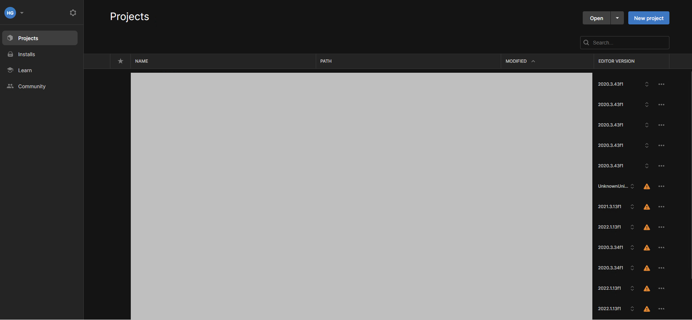

このページでは、Unityのインストール方法について記載します。
Unity Hubをインストールします。Unity Hubはこちらからダウンロードできます。
Unity HubはUnityの任意のバージョンをインストールして起動できるソフトウェアです。
Unity Hubを起動し、サイドバーから「Installs」→「Install Editor」をクリックします。
Unityのバージョンをインストールします。なお、歩行シミュレーション結果アセットでは、Unity LTS Release2021.3.17f1（2023年1月時点における長期サポートバージョン）での動作を確認しています。
Unity Hubのサイドバーから「Projects」を押し、右上の「New Project」からUnityプロジェクトを作成します。

Unityプロジェクト作成の際、「Editor Version」を設定のうえ、テンプレートを「3D」とし、任意のプロジェクト名を付け作成します。